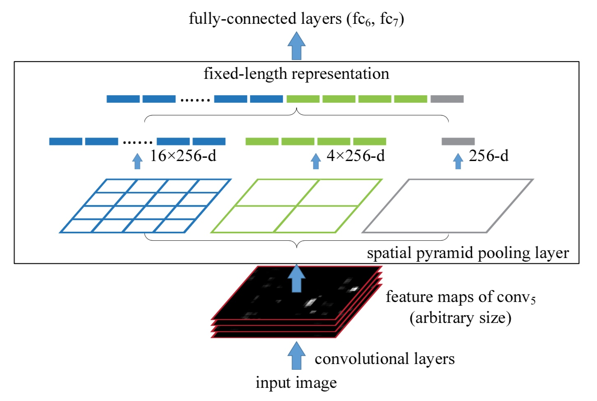

这次介绍的是2015年的Kaiming He的一篇论文：Spatial Pyramid Pooling in Deep Convolutional Networks for Visual Recognition，以下简称SPP-net。 SPP-net的主要贡献是提出了一种新的pooling的方式，spatial pyramid pooling，简称为SPP。使用这种pooling的方式，可以将任意大小的输入feature map给pooling到固定的大小。使用这种pooling的方式，最终在分类和检测任务上均有一定的效果。
二、SPP-net
1）问题描述
在介绍SPP这个pooling方式之前，我们先说一下，为什么需要这种特殊的pooling。
一般来看，CNN结构通常都由两个部分组成：卷积层和全连接层。比如7层的AlexNet，就是由5层的卷积层和2层的全连接层组成。对于卷积层，它可以处理任意尺度的输入（= = 请忽略极端情况）。而全连接层需要固定大小的输入。因此最终，我们的CNN结构的输入大小是由全连接层所固定。
那么固定大小的输入会造成什么问题呢？一般图像的大小并不是固定的，但是CNN要求输入固定，这样我们通常会采取两种方式得到固定大小的图像：裁剪和变形（仿射变换，缩放等）。
裁剪操作很难正好的包含需要的目标，而变形的方式会导致目标发生形变。两种方式都不能很好的处理图片的尺度问题。
而SPP这种pooling方式的引入，就可以突破CNN固定输入的约束。SPP可以将任意大小的输入feature map给pooling到固定的大小。将SPP层加在最后一个卷积层的后面，这样就可以pooling出固定的大小，之后再接上全连接层。这样得到的CNN结构，就可以以任意尺度的图像作为输出了，而使用了SPP层的网络，就成为SPP-net。
这张图就是一般的CNN结构（上）和SPP-net（下）的结构示意图。
2）SPP层工作流程
使用SPP层的CNN结构如下：

这里重点介绍一下SPP层的工作方式，之前查阅其他的博客，发现都没有得到很好地解释，为此专门阅读了Caffe的SPPLayer实现代码，发现实现的方式很简单。
上图中，最下方是CNN的卷积部分，黑色的部分是最后一个卷积层的输出，在这个图里面，卷积的最终输出的通道数为256。
对于一个feature map，我们按照固定的方式对他进行划分。比如现在有一个feature map的宽和高分别是W和H，通道数不妨就取256。我们使用MAX-Pooling的方式做处理，金字塔的层数设置为3。
首先，我们将这个feature map复制为3份。每一份都看成金字塔的一层。
- 对于第一层，也就是顶层，即图中最右边的示意图。我们将整个feature map看做一个整体。这样使用一个
(W, H)的kernel来进行pooling，这样就得到了1*1*256的输出。 - 对于第二层，即图中的中间的示意图。我们将feature map看成
2*2个独立的区域，每个区域单独的pooling。实现上即使用了kernel大小为 \((\lceil \frac{W}{2}\rceil ,\lceil \frac{H}{2}\rceil )\)，stride大小为 \((\lceil \frac{W}{2}\rceil ,\lceil \frac{H}{2}\rceil )\) 的一个pooling层进行pooling。最终得到了2*2*256的输出。 - 同理，第三层，即图中的左边的示意图。将feature map看成
4*4个独立的区域，单独pooling。使用kernel大小为 \((\lceil \frac{W}{4}\rceil ,\lceil \frac{H}{4}\rceil )\)，stride大小为 \((\lceil \frac{W}{4}\rceil ,\lceil \frac{H}{4}\rceil )\) 的pooling层进行pooling。最终得到4*4*256的输出。 - 总结下来，就是对于第N层，我们将整个feature map划分成 \((2^{N-1}*2^{N-1})\) 的区域，分别pooling。实现上使用kernel为 \((\lceil \frac{W}{2^{N-1}}\rceil ,\lceil \frac{H}{2^{N-1}}\rceil )\)，stride为 \((\lceil \frac{W}{2^{N-1}}\rceil ,\lceil \frac{H}{2^{N-1}}\rceil )\) 的pooling层进行pooling即可，最终得到 \((2^{N-1}*2^{N-1}*dim)\) 的输出。
最终将所有的pooling的结果进行flatten，最后concat在一起就完成。这里由于输入的feature map的大小可能不能被 \(2^N\)整除，采取了向上取整的做法，因此有时候需要额外的pad来填充feature map。
还有，这里使用的 \(2^N\) 这种区域划分的策略，那么我们能不能使用其他的策略呢？比如划分成 1*1，3*3，5*5，7*7...这个样子呢？这里，其实是可以的。SPP提供的是一个pooling的策略，只要能理解他的原理，我们完全可以设计一个自己的pooling方式。事实上，作者也使用了1*1，2\*2，3*3这样的三级划分。
以上就是SPP层的实现原理，总结下来就是，对输入feature map使用多个不同大小的pooling层进行无重叠的pooling操作，最终再合并。
如果这里解释的还不够清楚地话，可以参看一下Caffe的源码，相信聪慧的你一定能轻松的理解。
3）SPP层的特性
这里直接照搬论文的说法：
We note that SPP has several remarkable properties for deep CNNs: 1) SPP is able to generate a fixed-length output regardless of the input size, while the sliding window pooling used in the previous deep networks cannot; 2) SPP uses multi-level spatial bins, while the sliding window pooling uses only a single window size. Multi-level pooling has been shown to be robust to object deformations; 3) SPP can pool features extracted at variable scales thanks to the flexibility of input scales. Through experiments we show that all these factors elevate the recognition accuracy of deep networks.
SPP有很多特性：
- SPP能够对于任意大小的输入，得到固定大小的输出。（强调输出大小固定）
- SPP使用了多级的pooling维度（从上面的SPP工作流程就能看出来，他有各式各样的pooling尺寸），而传统的pooling策略是固定pooling大小的，多级pooling对目标的变形等有很好的鲁棒性。
- SPP能够处理任意大小的输入。（强调输入大小可变）
4）分类任务中的SPP
分类不是这个系列要研究的重点，这里就简单的介绍一下，作者如何训练SPP-net的。
1 单尺度训练
单尺度训练和一般的CNN的训练没有什么不同，图像经过缩放，然后截取224*224的区域用来训练。
2 多尺度训练
由于SPP可以处理任意尺度的输入，这就使得多尺度的输入图像的训练成为可能。但是各种CNN框架的卷积的实现都是使用矩阵的操作来完成的，一个mini-batch中的图像的大小必须是相同的。这里，作者先使用一个尺度的图像进行训练，1个epoch之后，再换成另一种尺度进行训练，这样不断的改变尺度。
最终，训练的收敛情况和一般的单尺度训练是差不多的，但是测试的效果要好了一些。
上面是训练上的技巧，细节可以看原论文。在测试的时候，也有相应的不同策略。以下简单说明一下作者的实验和结论：
1 多级Pooling提高准确率
将一般的网络，ZFNet，OverFeat等的最后一个卷积替换成SPP层，发现最终的效果有提升。
2 多尺度训练可以提高准确率
多尺度训练即上面训练中的策略。多尺度训练的结果要比单尺度好。
3 使用整张图片会提高准确率
这里作者做了两组实验。一是中心crop的224*224的图像作为输入，另一个是将图像的短边缩放到256像素并保证长宽比，然后输入网络做前馈。
4 Multi-View的测试方式
这部分和之后的目标检测的方式类似。
5）目标检测中的SPP
在R-CNN中，需要先是用selective search等方法，生成候选框，然后使用候选框的图像进行分类和回归的训练。在SPP-net，可以很大的简化这一流程，加速训练和测试。
1 目标检测中SPP的训练
首先使用selective search得到2K的候选框。之后将图像缩放到短边固定大小（可以是多种尺度，这样可以一定程度提升性能），然后使用一个预训练好的网络的卷积的部分（比如ZFNet的前5层）进行前馈，得到整张图的feature map。根据候选框的位置，可以推出候选框在feature map上相应的位置，对这些位置上的feature map进行SPP操作，从而可以得到候选框的特征向量。
作者做了两个方式的训练，一个是使用SVM做的类别分类器，另一种是fine-tune预训练的模型。 对于SVM的训练，目的是给每一种类别都训练一个二分类的分类器。因此总共需要训练20个SVM分类器。根据和groundtruth的iou来选择正负样本，具体的选择策略和R-CNN相同。最终得到了20个分类器，给每个候选框打分，最终的结果使用NMS来处理。
预训练模型的fine-tune。这里只fune-tune了fc层。保留了前面的卷积部分。这样的话，就也只需要使用前面提取的候选框的特征向量作为输入了。训练十分的迅速。回归的训练，和R-CNN相同，使用了最后的pool5的特征来训练线性回归模型。
2 目标检测的测试流程
和训练部分类似，目标检测的首先使用selective search得到候选框，之后将图像缩放成固定尺度（可以是多个尺度，这样会有更好的效果），使用卷积部分前馈得到整张图的feature map。使用SPP得到每个候选框的特征向量。之后将特征向量输入到SVM或者fine-tune之后的网络的fc层，从而得到最终的框的得分和位置。最终使用NMS处理即可。
3 多模型融合
多模型融合可以很好的提高最终的准确率。论文中，作者使用了两种不同的网络，分别按照上面的方式得到候选框的得分和位置。之后将两个网络的候选框放在一起，使用NMS处理之后，作为最终的结果。检测的效果的确有了一些提升。
6）个人总结
总体来说，本文最重要的部分还是在于SPP层的提出。这个层可以有效的将各种尺度的输入pooling到固定大小的输出。在分类任务上，多级pooling的策略可以从各种维度上保留特征的信息，在检测任务上，又可以通过一次性计算全图的feature map，再pooling出每个候选区域的特征，极大地减小特征提取部分的计算量。
论文中有大量的实验和训练中的细节，这里并没有介绍到。感兴趣的同学最好还是看一下原文，相信应该可以收获更多。
在检测部分，该方法还是有一些缺点的。首先是这个的训练过程和R-CNN还是差不多的，相比于之后的目标检测的方法，可以看出这里还是需要大量的人工的参与。其次，这里的特征是固定的，在SVM或者模型的fine-tune过程中，都是直接使用网络的卷积层的输出，并没有对卷及部分进行训练。那么图像的特征在检测任务中是否还具有优化的潜力呢？我相信还是有的。
技术总是在不断的进步的。这里的SPP层的提出。可以说，一定程度上造就了另一个经典的目标检测方法Fast R-CNN的提出，Fast R-CNN就是下一篇博客的主角！